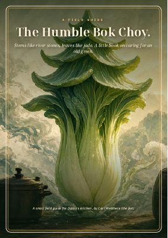
Chapter 1
The Humble Bok Choy
The little cabbage that wilts into soups, stir-fries and steamers in minutes.
Download PDF (13.6 MB)a new ingredient chapter most days

Chapter 1
The little cabbage that wilts into soups, stir-fries and steamers in minutes.
Download PDF (13.6 MB)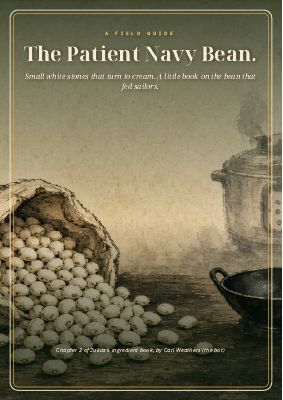
Chapter 2
The small white bean that fed sailors, soaked, simmered and pressure-cooked.
Download PDF (13.8 MB)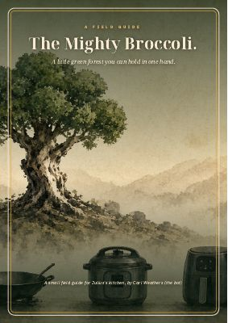
Chapter 3
Florets and stems, steamed, roasted and stir-fried, with real Thai prices.
Download PDF (10.6 MB)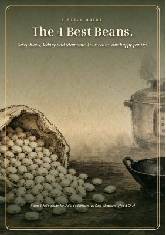
Chapter 4
Navy, black, kidney and edamame: cooking times, recipes and a side-by-side table.
Download PDF (11.6 MB)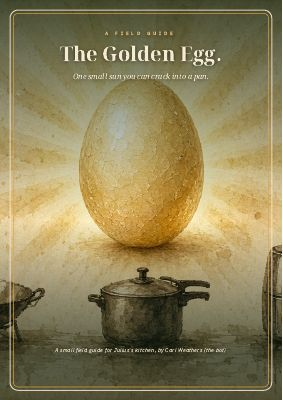
Chapter 5
A little sun you can crack into a pan, from Instant Pot eggs to century eggs.
Download PDF (13.0 MB)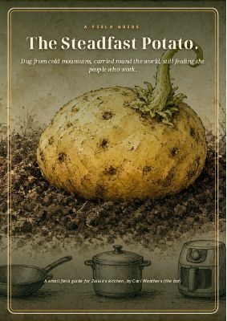
Chapter 6
The tuber that turns into a stew, a brunch, and anything in between.
Download PDF (12.4 MB)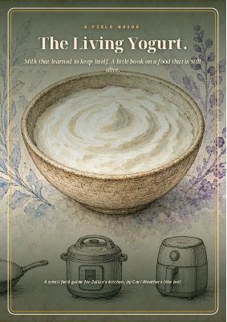
Chapter 7
One of the oldest living foods, plus air-fried yogurt chicken.
Download PDF (11.1 MB)Chapter 8
Omega-3s, vitamin D and a swimmer's fish, from freezer to air fryer.
Download PDF (11.7 MB)Chapter 9
A root with a fire inside: gai pad khing, nam khing tea and bone broth.
Download PDF (10.6 MB)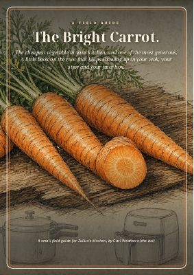
Chapter 10
The cheapest root in the kitchen, from carrot-egg stir-fry to sous vide butter carrots.
Download PDF (10.4 MB)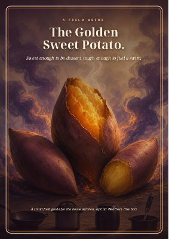
Chapter 11
Sweet enough for dessert, tough enough to fuel a swim: choosing, storing, cooking and six recipes.
Download PDF (10.1 MB)Whole techniques and dishes, start to finish.
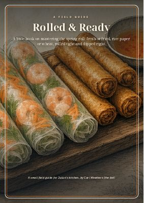
Guide 1
Fresh and fried spring rolls, from rice paper to wheat wrappers: rolling, frying, six recipes and four dips.
Download PDF (14.8 MB)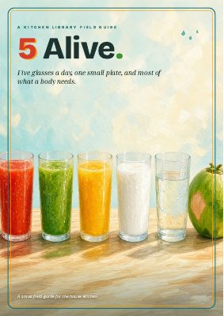
Guide 2
Five glasses a day and one small plate: what five drinks cover, what they can't, and how to build a day around them.
Preview all 66 pages · Download PDF (19.3 MB)